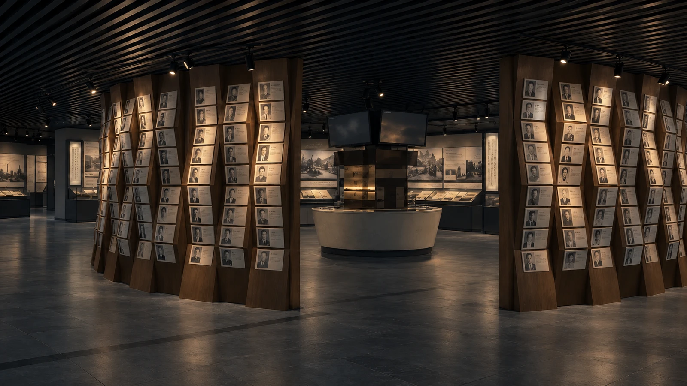
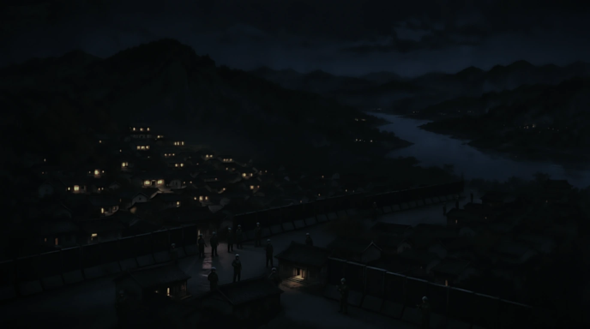
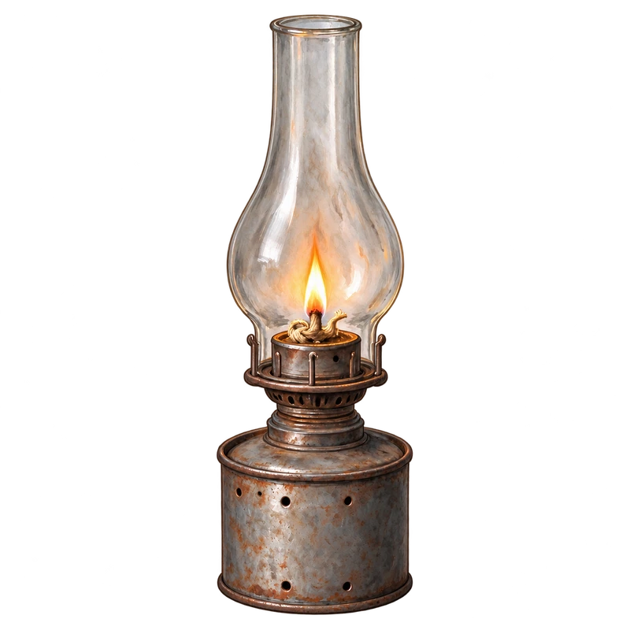
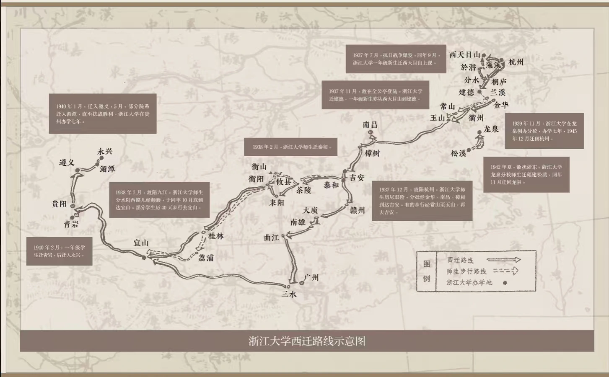

可以从浏览器菜单安装到桌面，以独立窗口打开游戏。
正在准备离线剧情与图片……
离线配乐另需下载约 27 MiB；已下载的配乐可在断网时播放。下载中请保持游戏打开，中断后可重试。
新版本已准备好。关闭游戏的所有窗口后重新打开即可更新，进度保存在本机。
存档仅保存在当前浏览器或应用中；清除网站数据会移除存档与离线资源。系统也可能回收离线缓存。
重新开始会重置地图、选择和手账，并覆盖自动存档。手动存档会保留。
回顾只展示这一程留下的记录，不改变进度与分数。
请开启浏览器的 JavaScript 功能，即可开始这段故事。
音乐随剧情切换。首次点击或按键后启用声音；切到后台时暂停。静音与音量会保存在本机。
等待开始西行。